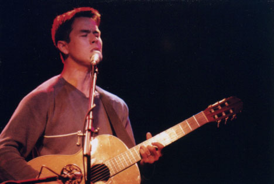
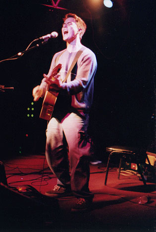
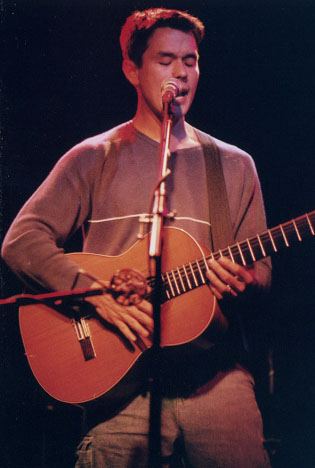
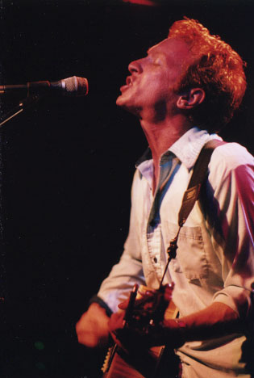
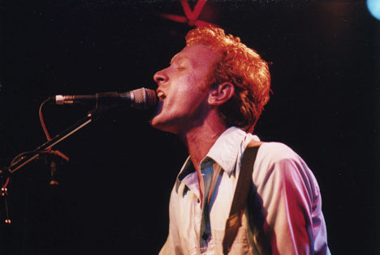
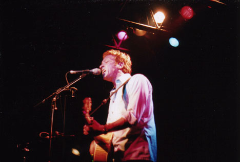

Big Orange Crayonmusical thingsMark Houlihan and Bill Janovitz Valentine's, Albany, NY June 2nd, 2001 Pictures at the bottom! No review, but a really nice show - you may remember Mark from Me and Jeremy, and Bill Janovitz is the guy from Buffalo Tom. Really really awesome shows by each, and Ariel missed it because she went to see U2! Heehee Pictures: Mark Houlihan:    Bill Janovitz:   You can't really see why in a small JPEG like this, but this is the picture that really made me love Superia 1600 film. ...I'm a dork, ok?  yada yada yada: Nikon FM2n, Fuji Superia 1600, 24mm f/2.8, 50mm f/1.4, 105mm f/2.5 Nikkors. Shutter speeds from 1/15 to 1/60. Yay. Please don't post these elsewhere unless you're in one of the bands or are a nice person. |